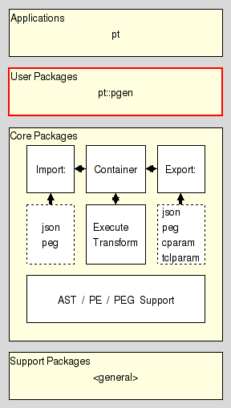

pt_parser_api(i) 1 tcllib "Parser Tools"
Name
pt_parser_api - Parser API
Synopsis
- package require Tcl 8.5
Description
Are you lost ? Do you have trouble understanding this document ? In that case please read the overview provided by the Introduction to Parser Tools. This document is the entrypoint to the whole system the current package is a part of.
This document describes the API shared by the grammar interpreter provided by the package pt::peg::interp and the parsers generated by the pt application for the result formats critcl, snit, and oo regarding access to the actual parsing functionality.
Its intended audience are people who wish to create a parser for some language of theirs and then use that parser within a Tcl-based package or application.
It resides in the User Layer of Parser Tools.

Class API
- className ?objectName?
The class command constructs parser instances, i.e. objects. The result of the command is the fully-qualified name of the instance command.
If no objectName is specified the class will generate and use an automatic name. If the objectName was specified, but is not fully qualified the command will be created in the current namespace.
Instance API
All parser instances provide at least the methods shown below:
- objectName destroy
This method destroys the parser instance, releasing all claimed memory and other resources, and deleting the instance command.
The result of the command is the empty string.
- objectName parse chan
This method runs the parser using the contents of chan as input (starting at the current location in the channel), until parsing is not possible anymore, either because parsing has completed, or run into a syntax error.
Note here that the Parser Tools are based on Tcl 8.5+. In other words, the channel argument is not restricted to files, sockets, etc. We have the full power of reflected channels available.
It should also be noted that the parser pulls the characters from the input stream as it needs them. If a parser created by this package has to be operated in a push aka event-driven manner it will be necessary to go to Tcl 8.6+ and use the coroutine::auto to wrap it into a coroutine where read is properly changed for push-operation.
Upon successful completion the command returns an abstract syntax tree as its result. This AST is in the form specified in section AST serialization format. As a plain nested Tcl-list it can then be processed with any Tcl commands the user likes, doing transformations, semantic checks, etc. To help in this the package pt::ast provides a set of convenience commands for validation of the tree's basic structure, printing it for debugging, and walking it either from the bottom up, or top down.
When encountering a syntax error the command will throw an error instead. This error will be a 4-element Tcl-list, containing, in the order listed below:
The string pt::rde identifying it as parser runtime error.
The location of the parse error, as character offset from the beginning of the parsed input.
The location of parse error, now as a 2-element list containing line-number and column in the line.
A set of atomic parsing expressions indicating encoding the characters and/or nonterminal symbols the parser expected to see at the location of the parse error, but did not get. For the specification of atomic parsing expressions please see the section PE serialization format.
- objectName parset text
This method runs the parser using the string in text as input. In all other ways it behaves like the method parse, shown above.
Usage
A generated parser is used like this
package require the-parser-package ;# Generated by result-formats 'critcl', 'snit' or 'oo' of 'pt'.
set parser [the-parser-class]
set ast [$parser parse $channel]
... process the abstract syntax tree ...
When using a grammar interpreter for parsing some differences creep in
package require the-grammar-package ;# Generated by result-format 'container' of 'pt'.
set grammar [the-grammar-class]
package require pt::peg::interp
set parser [pt::peg::interp]
$parser use $grammar
set ast [$parser parse $channel]
$parser destroy
... process the abstract syntax tree ...
AST serialization format
Here we specify the format used by the Parser Tools to serialize Abstract Syntax Trees (ASTs) as immutable values for transport, comparison, etc.
Each node in an AST represents a nonterminal symbol of a grammar, and the range of tokens/characters in the input covered by it. ASTs do not contain terminal symbols, i.e. tokens/characters. These can be recovered from the input given a symbol's location.
We distinguish between regular and canonical serializations. While a tree may have more than one regular serialization only exactly one of them will be canonical.
- Regular serialization
The serialization of any AST is the serialization of its root node.
The serialization of any node is a Tcl list containing at least three elements.
The first element is the name of the nonterminal symbol stored in the node.
The second and third element are the locations of the first and last token in the token stream the node represents (covers).
Locations are provided as non-negative integer offsets from the beginning of the token stream, with the first token found in the stream located at offset 0 (zero).
The end location has to be equal to or larger than the start location.
All elements after the first three represent the children of the node, which are themselves nodes. This means that the serializations of nodes without children, i.e. leaf nodes, have exactly three elements. The children are stored in the list with the leftmost child first, and the rightmost child last.
- Canonical serialization
The canonical serialization of an abstract syntax tree has the format as specified in the previous item, and then additionally satisfies the constraints below, which make it unique among all the possible serializations of this tree.
The string representation of the value is the canonical representation of a pure Tcl list. I.e. it does not contain superfluous whitespace.
Example
Assuming the parsing expression grammar below
PEG calculator (Expression)
Digit <- '0'/'1'/'2'/'3'/'4'/'5'/'6'/'7'/'8'/'9' ;
Sign <- '-' / '+' ;
Number <- Sign? Digit+ ;
Expression <- Term (AddOp Term)* ;
MulOp <- '*' / '/' ;
Term <- Factor (MulOp Factor)* ;
AddOp <- '+'/'-' ;
Factor <- '(' Expression ')' / Number ;
END;
and the input string
120+5
then a parser should deliver the abstract syntax tree below (except for whitespace)
set ast {Expression 0 4
{Factor 0 4
{Term 0 2
{Number 0 2
{Digit 0 0}
{Digit 1 1}
{Digit 2 2}
}
}
{AddOp 3 3}
{Term 4 4
{Number 4 4
{Digit 4 4}
}
}
}
}
Or, more graphical

PE serialization format
Here we specify the format used by the Parser Tools to serialize Parsing Expressions as immutable values for transport, comparison, etc.
We distinguish between regular and canonical serializations. While a parsing expression may have more than one regular serialization only exactly one of them will be canonical.
- Regular serialization
- Atomic Parsing Expressions
The string epsilon is an atomic parsing expression. It matches the empty string.
The string dot is an atomic parsing expression. It matches any character.
The string alnum is an atomic parsing expression. It matches any Unicode alphabet or digit character. This is a custom extension of PEs based on Tcl's builtin command string is.
The string alpha is an atomic parsing expression. It matches any Unicode alphabet character. This is a custom extension of PEs based on Tcl's builtin command string is.
The string ascii is an atomic parsing expression. It matches any Unicode character below U0080. This is a custom extension of PEs based on Tcl's builtin command string is.
The string control is an atomic parsing expression. It matches any Unicode control character. This is a custom extension of PEs based on Tcl's builtin command string is.
The string digit is an atomic parsing expression. It matches any Unicode digit character. Note that this includes characters outside of the [0..9] range. This is a custom extension of PEs based on Tcl's builtin command string is.
The string graph is an atomic parsing expression. It matches any Unicode printing character, except for space. This is a custom extension of PEs based on Tcl's builtin command string is.
The string lower is an atomic parsing expression. It matches any Unicode lower-case alphabet character. This is a custom extension of PEs based on Tcl's builtin command string is.
The string print is an atomic parsing expression. It matches any Unicode printing character, including space. This is a custom extension of PEs based on Tcl's builtin command string is.
The string punct is an atomic parsing expression. It matches any Unicode punctuation character. This is a custom extension of PEs based on Tcl's builtin command string is.
The string space is an atomic parsing expression. It matches any Unicode space character. This is a custom extension of PEs based on Tcl's builtin command string is.
The string upper is an atomic parsing expression. It matches any Unicode upper-case alphabet character. This is a custom extension of PEs based on Tcl's builtin command string is.
The string wordchar is an atomic parsing expression. It matches any Unicode word character. This is any alphanumeric character (see alnum), and any connector punctuation characters (e.g. underscore). This is a custom extension of PEs based on Tcl's builtin command string is.
The string xdigit is an atomic parsing expression. It matches any hexadecimal digit character. This is a custom extension of PEs based on Tcl's builtin command string is.
The string ddigit is an atomic parsing expression. It matches any decimal digit character. This is a custom extension of PEs based on Tcl's builtin command regexp.
The expression [list t x] is an atomic parsing expression. It matches the terminal string x.
The expression [list n A] is an atomic parsing expression. It matches the nonterminal A.
- Combined Parsing Expressions
For parsing expressions e1, e2, ... the result of [list / e1 e2 ... ] is a parsing expression as well. This is the ordered choice, aka prioritized choice.
For parsing expressions e1, e2, ... the result of [list x e1 e2 ... ] is a parsing expression as well. This is the sequence.
For a parsing expression e the result of [list * e] is a parsing expression as well. This is the kleene closure, describing zero or more repetitions.
For a parsing expression e the result of [list + e] is a parsing expression as well. This is the positive kleene closure, describing one or more repetitions.
For a parsing expression e the result of [list & e] is a parsing expression as well. This is the and lookahead predicate.
For a parsing expression e the result of [list ! e] is a parsing expression as well. This is the not lookahead predicate.
For a parsing expression e the result of [list ? e] is a parsing expression as well. This is the optional input.
- Canonical serialization
The canonical serialization of a parsing expression has the format as specified in the previous item, and then additionally satisfies the constraints below, which make it unique among all the possible serializations of this parsing expression.
The string representation of the value is the canonical representation of a pure Tcl list. I.e. it does not contain superfluous whitespace.
Terminals are not encoded as ranges (where start and end of the range are identical).
Example
Assuming the parsing expression shown on the right-hand side of the rule
Expression <- Term (AddOp Term)*
then its canonical serialization (except for whitespace) is
{x {n Term} {* {x {n AddOp} {n Term}}}}
Bugs, Ideas, Feedback
This document, and the package it describes, will undoubtedly contain bugs and other problems. Please report such in the category pt of the Tcllib Trackers. Please also report any ideas for enhancements you may have for either package and/or documentation.
Keywords
EBNF, LL(k), PEG, TDPL, context-free languages, expression, grammar, matching, parser, parsing expression, parsing expression grammar, push down automaton, recursive descent, state, top-down parsing languages, transducer
Category
Parsing and Grammars
Copyright
Copyright © 2009 Andreas Kupries <andreas_kupries@users.sourceforge.net>